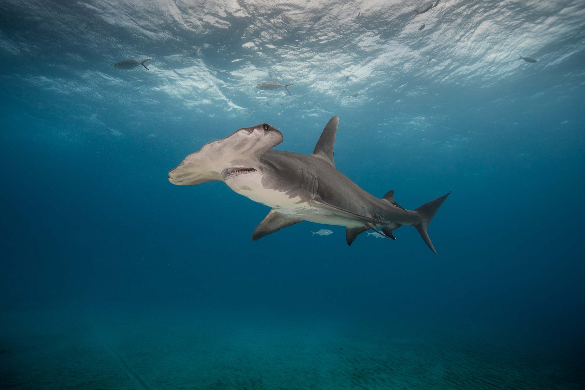

Great White Shark

Great white sharks are known for their strength, size, and ferocity. They aee easily recognizable due to their sleek, torpedo-shaped bodies, which are built for speed. They have a white underbelly and a grayish upper body that helps them blend into the ocean. They can grow up to 20 feet long and can weigh up to 5,000 pounds. They are common in the oceans of South Africa, Australia, California, and Mexico. However, these shark are very adapltable and can survive in different climates. Great whites eat fish, seals, sea lions, small toothed whales, and sometimes sea turtles and seabirds.
Hammerhead Shark

Hammerhead sharks are one of the most unique and recognizable species of shark, mainly due to their distinctive hammer-shaped head. This comes with many evolutionary benifits for the species. The wide spacing of their eyes gives hammerheads a more panoramic view, helping them detect prey from a greater distance. Hammerhead sharks are found in warm, temperate, and tropical oceans. Some areas where hammerheads are commonly seen include the coasts of Hawaii, Florida, and the Galápagos Islands. Hammerheads are carnivorous and feed on a variety of marine animals, including fish, squid, octopuses, and crustaceans.
Whale Shark

The whale shark (Rhincodon typus) is the largest fish in the world and one of the ocean's most awe-inspiring creatures. Known for their immense size and gentle nature, whale sharks are filter feeders, primarily eating plankton and other small marine organisms. Whale sharks are enormous, with adults commonly reaching lengths of 30 to 40 feet, although some have been recorded at over 60 feet. They can weigh up to 20 tons! Whale sharks are found in warm and temperate waters around the world. Some popular places are the Yucatán Peninsula in Mexico, the Maldives, the Philippines, and reefs in Australia.